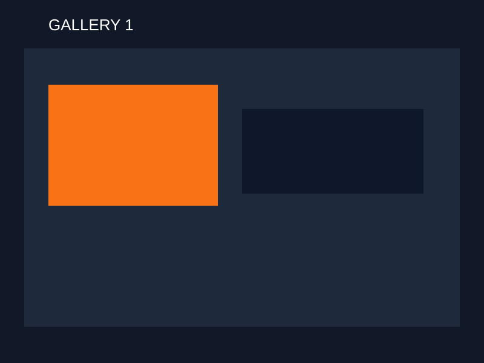
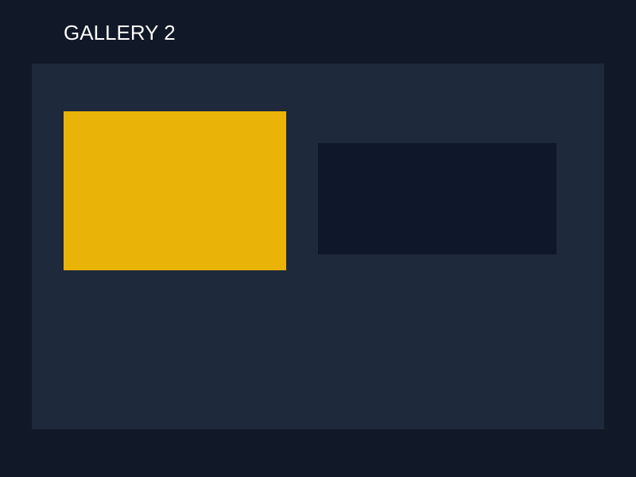
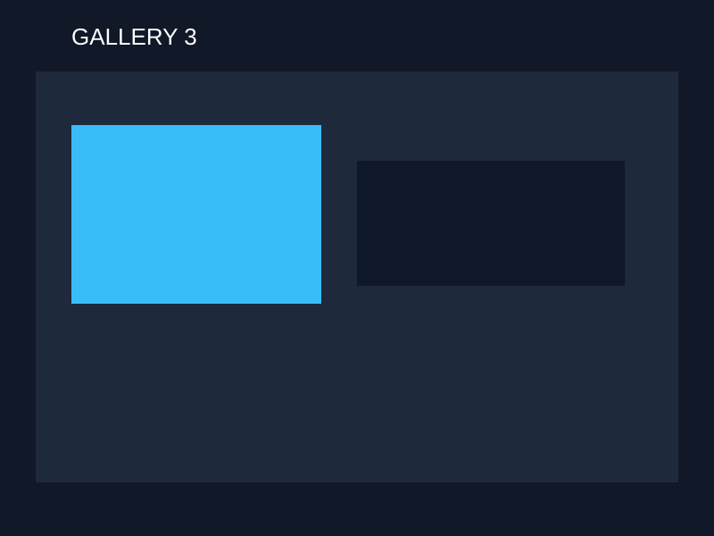
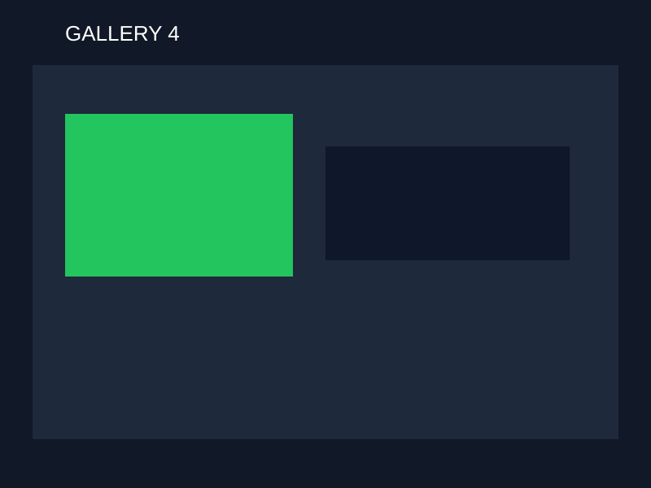
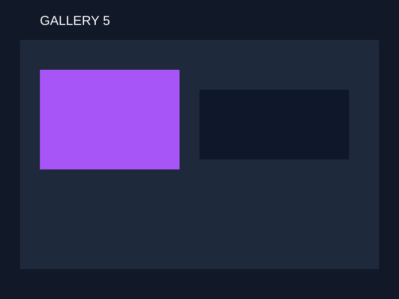
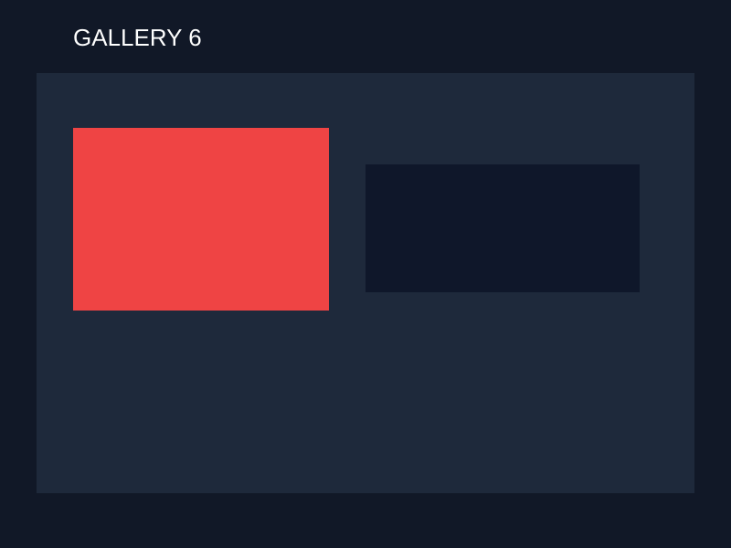

Diagnostics & Repairs
Advanced vehicle repairs and fault diagnostics to keep your car performing at its best.
Quote
View service →From diagnostics to EV servicing, we keep your vehicle running at its best with honest, precision care.
Advanced vehicle repairs and fault diagnostics to keep your car performing at its best.
Quote
View service →Specialist EV and hybrid mechanic, providing servicing and diagnostics using modern technology.
Quote
View service →
Detailed pre-purchase vehicle inspections to give you confidence and clarity before you buy.
Quote
View service →Scan and live-data diagnosis for warning lights, misfires and poor running.
Quote
View service →Clutches, exhausts, driveline and general mechanical work for all makes and models.
Quote
View service →
Pads, rotors, shocks, bushes and steering repairs — measured, not guessed.
Quote
View service →Overheating, radiator, thermostat and water-pump diagnosis and repair.
Quote
View service →
Starting, charging, lighting, sensors and aftermarket wiring faults.
Quote
View service →
Load-tested batteries, hybrid/EV battery health and charging-system checks.
Quote
View service →A Middleton workshop combining modern diagnostics with practical mechanical expertise.
Auto Bridge is a car repair shop at 11a Midas Place, Middleton, Christchurch 8024, New Zealand. We combine modern diagnostic technology with practical mechanical expertise — from everyday cars to EV and hybrid systems.
Our focus is safety, precision and long-term performance. Honest advice, transparent service, and workmanship you can trust. No upsells, no surprises. Clear quotes before any work begins.
Find us on Google Maps or call +64 29 020 16792. We are listed as open 24 hours.
About the workshop
Honest advice, transparent service and workmanship you can trust.
Modern diagnostic technology with practical mechanical expertise — everyday cars through to EV and hybrid systems.
No upsells, no surprises. Clear quotes before any work begins.
OEM-grade parts and meticulous workmanship on every job.
A 5.0-rated Christchurch car repair shop, open 24 hours when you need us.
European, Japanese, Korean, American and EV platforms.
Methodical, used to explaining the job in plain English.

Mechanical repairs
Diagnostics, brakes, suspension, cooling and general mechanical work at the Middleton workshop.

Specialist servicing
Hybrid system diagnostics, EV servicing, battery health checks and hybrid repairs.
Bookings & quotes
Call +64 29 020 16792 anytime — Auto Bridge is listed as open 24 hours.
5.0 from 6 Google reviews for Auto Bridge in Middleton, Christchurch.
Bays, tooling and jobs in progress at Midas Place.

Diagnostics bay
Mechanical repairs
EV & hybrid work
Battery health check
Workshop floor, Midas Place
Cooling system serviceStraight answers on timing, quotes and what to bring.
Booking is preferred so we can put you in a bay. Call +64 29 020 16792 — Auto Bridge is listed as open 24 hours at 11a Midas Place, Middleton.
Inspection and diagnosis come first. We then send a written quote. Extra work is not started without your approval. No upsells, no surprises.
No. We do not offer WOF or compliance inspections. We focus on diagnostics, repairs, EV & hybrid servicing and pre-purchase inspections.
Yes. We provide hybrid system diagnostics, EV servicing, battery health checks and hybrid repairs using modern diagnostic equipment.
All common makes and models — European, Japanese, Korean, American and EV platforms including Tesla, BYD, Toyota, Ford, BMW and more.
11a Midas Place, Middleton, Christchurch 8024, New Zealand. Wheelchair accessible. View the listing on Google Maps.